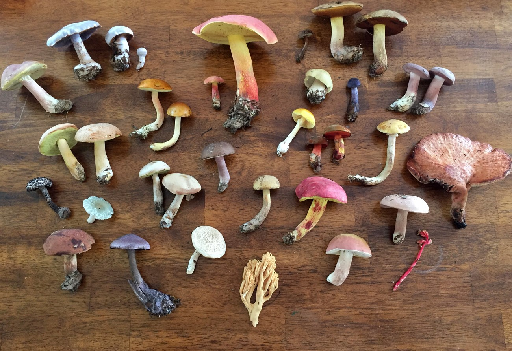
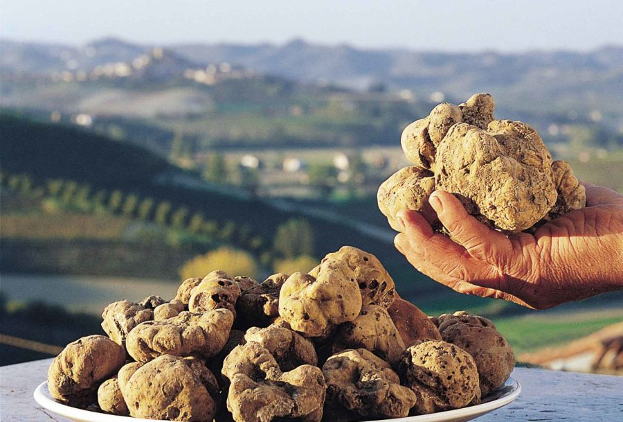

Nove gljive za 2024. godinu

Prema izvorima, nekoliko novih vrsta gljiva se uzgaja, obećavajući niz okusa i primjena u kulinarstvu.
Nove vrste uskoro će biti dostupne na tržištima, nudeći kuharima i ljubiteljima gljiva nove opcije za njihova jela.
Izvor: zastita-prirode.hr
Rijetki tartufi

Tartufi su vrsta jestivih gljiva koje rastu po zemljom, najčešće uz korijenje stabala poput hrasta, bukve, topole, vrbe i brijesta. Izgledaju poput gomolja i često ih se izgledom uspoređuje s krumpirom.
Pridružite nam se dok zaranjamo u svijet tartufa, istražujući njihovo uzgajanje, berbu i primjenu u gurmanskom kuhanju.
Izvor: zigantetartufi.hr